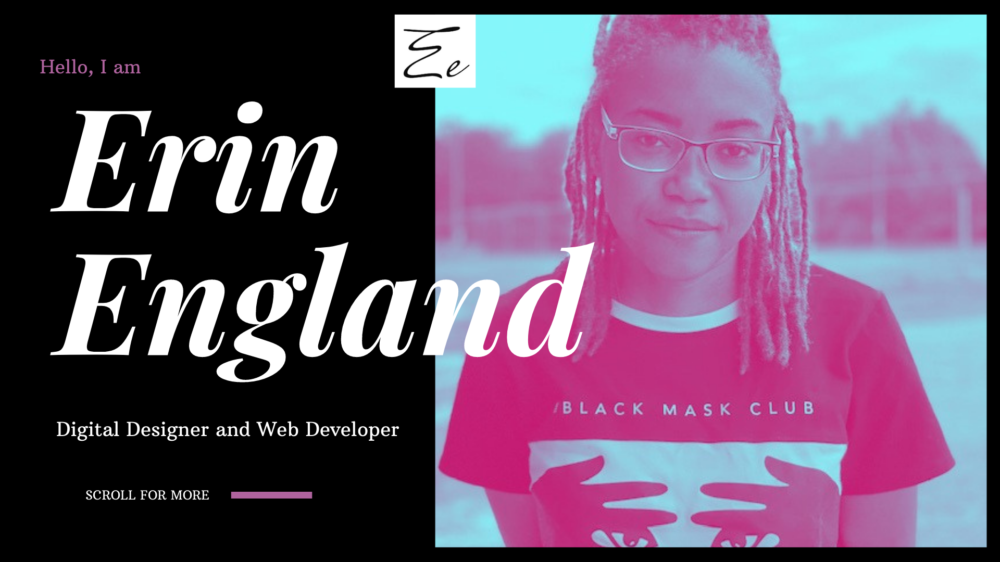
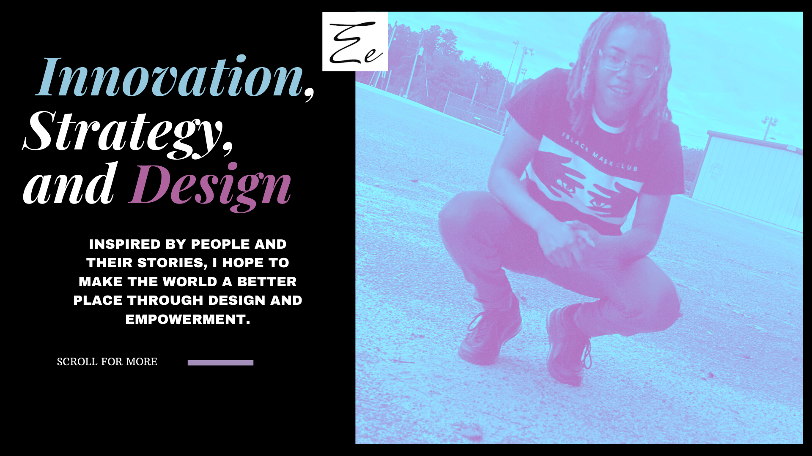
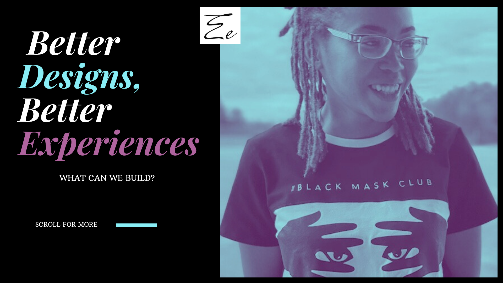
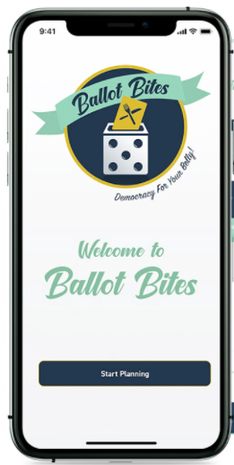
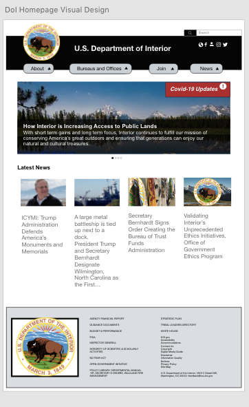
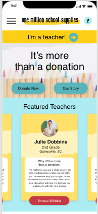

<!DOCTYPE html>
<html lang="en">
<head>
    <meta charset="UTF-8">
    <meta name="viewport" content="width=device-width, initial-scale=1.0">
    <title>Erin England Portfolio</title>
        <link rel="stylesheet" href="style.css">
        
        <!DOCTYPE html>
        <html lang="en">
        <title>W3.CSS Template</title>
        <meta charset="UTF-8">
        <meta name="viewport" content="width=device-width, initial-scale=1">
        <link rel="stylesheet" href="https://www.w3schools.com/w3css/4/w3.css">
        <link rel="stylesheet" href="https://fonts.googleapis.com/css?family=Lato">
        <link rel="stylesheet" href="https://cdnjs.cloudflare.com/ajax/libs/font-awesome/4.7.0/css/font-awesome.min.css">
        <style>
        body {font-family: "Lato", sans-serif, font-size}
        .mySlides {display: none}

        <style>

         
}
  p1 {
    color: red;
    margin: 5px;
    cursor: pointer;
  }
  p1:hover {
    background: yellow;
  }
  </style>
  <script src="https://code.jquery.com/jquery-3.5.0.js"></script>
</head>
<body>
 


<head>
  <style>
  h1 {
    font-size: 40px;
  }
  
  h2 {
    font-size: 30px;
  }
  
  p {
    font-size: 14px;
  }
  </style>
  </head>
 
  
      
  


 
<script>
$( "p1" ).click(function() {
  $( this ).slideUp();
});
</script>

</html>
</style>

        <style>
  p1 {
    color: red;
    margin: 5px;
    cursor: pointer;
  }
  p1:hover {
    background: yellow;
  }
  </style>
  <script src="https://code.jquery.com/jquery-3.5.0.js"></script>
</head>
<body>
 

<script>
$( "p1" ).click(function() {
  $( this ).slideUp();
});
</script>
        
        <!-- Navbar -->
        <div class="w3-top">
          <div class="w3-bar w3-black w3-card">
            <a class="w3-bar-item w3-button w3-padding-large w3-hide-medium w3-hide-large w3-right" href="javascript:void(0)" onclick="myFunction()" title="Toggle Navigation Menu"><i class="fa fa-bars"></i></a>
            <h4><a href="#" class="w3-bar-item w3-button w3-padding-large">HOME</a></h4>
            <h4><a href="#about" class="w3-bar-item w3-button w3-padding-large w3-hide-small">ABOUT</a></h4>
            <h4><a href="#projects" class="w3-bar-item w3-button w3-padding-large w3-hide-small">PROJECTS</a></h4>
            <h4><a href="#expertise" class="w3-bar-item w3-button w3-padding-large w3-hide-small">EXPERTISE</a></h4>
            <h4><a href="#contact" class="w3-bar-item w3-button w3-padding-large w3-hide-small">CONTACT</a></h4>
            
            <div class="w3-dropdown-hover w3-hide-small">
              <div class="w3-dropdown-content w3-bar-block w3-card-4">
                
              </div>
            </div>
            <h4><a href="javascript:void(0)" class="w3-padding-large w3-hover-red w3-hide-small w3-right"><i class="fa fa-search"></i></a></h4>
          </div>
        </div>
        
        <!-- Navbar on small screens (remove the onclick attribute if you want the navbar to always show on top of the content when clicking on the links) -->
        <div id="navDemo" class="w3-bar-block w3-black w3-hide w3-hide-large w3-hide-medium w3-top" style="margin-top:46px">
          <a href="#about" class="w3-bar-item w3-button w3-padding-large" onclick="myFunction()">ABOUT</a>
          <a href="#projects" class="w3-bar-item w3-button w3-padding-large" onclick="myFunction()">PROJECTS</a>
          <a href="#expertise" class="w3-bar-item w3-button w3-padding-large" onclick="myFunction()">EXPERTISE</a>
          <a href="#contact" class="w3-bar-item w3-button w3-padding-large" onclick="myFunction()">CONTACT</a>
          <a href="#" class="w3-bar-item w3-button w3-padding-large" onclick="myFunction()">EXPERTISE</a>
        </div>
        
        <!-- Page content -->
        <div class="w3-content" style="max-width:2000px;margin-top:46px">
        
          <!-- Automatic Slideshow Images -->
          <div class="mySlides w3-display-container w3-center" 
            
            
            <div class="w3-display-bottommiddle w3-container w3-text-white w3-padding-32 w3-hide-small">  
            </div>
          </div>
          <div class="mySlides w3-display-container w3-center">
            
            <div class="w3-display-bottommiddle w3-container w3-text-white w3-padding-32 w3-hide-small">
            </div>
          </div>
          <div class="mySlides w3-display-container w3-center">
            
            <div class="w3-display-bottommiddle w3-container w3-text-white w3-padding-32 w3-hide-small">
            </div>
          </div>
        
          <!-- The About Section -->
          <div class="main" id="#about"></div>
          <div class="w3-container w3-content w3-center w3-padding-64" style="max-width:800px" id="about">
            <h2 class="w3-wide">About Me</h2>
            <p class="w3-opacity"><h3><i>I love to design.</i></h3></p>
            <p class="w3-justify"><h3>I am Erin England, a freelance UX/UI designer. I enjoy solving real-world problems and creating beautiful human experiences. I specialize in systems and interfaces. I am passionate about making sure that websites and mobile applications are ravishing, user-friendly, and brand promoting. My skills include  researching, prototyping, testing, and validating ideas. 

              Let’s talk designs!</h3></p>
           

                
            </div>
          </div>
        
          <!-- PROJECT Section -->
          <div class="w3-black" id="projects">
            <div class="w3-container w3-content w3-padding-64" style="max-width:800px">
              <h2 class="w3-wide w3-center">Projects</h2>
              <h3 class="w3-opacity w3-center"><i>Designed by Erin England</i></h3><br>
        
              
        
              <div class="w3-row-padding w3-padding-32" style="margin:0 -16px">
                <div class="w3-third w3-margin-bottom">
                  
                  <div class="w3-container w3-white">
                    <h5><b>Ballot Bites</b></h5>
                    <h6 class="w3-opacity">Duration; 3 weeks</h6>
                    <h6>Teams of 3 are tasked with developing a mobile application of their choosing while executing the user experience (UX)/user interface (UI) design process.</h6>
                    <form id="myForm">
                      <a class="w3-button w3-black w3-margin-bottom" href=" https://emichelle1.github.io/UX_UI_HW_20/">View More</a>
                      

                  </form>
                  </div>
                </div>
                <div class="w3-third w3-margin-bottom">
                  
                  <div class="w3-container w3-white">
                    <h5><b>Department of Interior</b></h5>
                    <h6 class="w3-opacity">Duration; 3 weeks</h6>
                    <h6>Teams of 3 are tasked with redesigning  a government agency website. Teams will use the design process to define, ideate, prototype, and test a responsive website solution.</h6>
                    <form id="myForm">
                      <a class="w3-button w3-black w3-margin-bottom" href="https://emichelle1.github.io/UX_UI_HW_20/">View More</a>
                  </form>
                  </div>
                </div>
                <div class="w3-third w3-margin-bottom">
                  
                  <div class="w3-container w3-white">
                    <h5><b>One Million School Supplies</b></h5>
                    <h6 class="w3-opacity">Duration; 3 weeks</h6>
                    <h6>Teams of 3 are tasked with choosing a local nonprofit and executing the UX/UI design process. The teams will create a high-fidelity responsive web design solution through a clickable UI prototype.

                    </h6>
                    <button class="w3-button w3-black w3-margin-bottom" onclick="document.getElementById('ticketModal').style.display='block'">View Details</button>
                  </div>
                </div>
              </div>
            </div>
          </div>

          <div>
            <p></p>
          </div>
        
          
        
          <!-- The Expertise Section -->
          <div class="w3-container w3-content w3-padding-64" style="max-width:800px" id="expertise">
            <h2 class="w3-wide w3-center"><b>Expertise</b></h2>
            <h3 class="w3-opacity w3-center"><i><b>Erin England</b></i></h3>
 
            <h4 class="w3-opacity w3-center"><i>Email: Erin.england87@gmail.com | Mobile: (706) 495-8456 | Augusta, GA 30909 | LinkedIn: /ErinEngland  | Portfolio: www.ErinEngland.com</i></h4>
 
              
            <h4 class="w3-opacity w3-center">Title: Jr. User Researcher, UX designer, Interaction Designer</h4>
              
            <h4 class="w3-opacity w3-center">•	Roles: Understand user’s needs, generate ideas to solve their problems, prototype designs, and test the designs with users.</h4>
              
              <h4 class="w3-opacity w3-center">Objective: Seeking a job opportunity where I may use my  business and ux/ui background and interpersonal skills to further company growth.</h4>
              
              <h4 class="w3-opacity w3-center"><b>Education:</b></h4> 
              <h4 class="w3-opacity w3-center"> North Carolina Agricultural and Technical State University, Greensboro, NC</h4> 
                <h4 class="w3-opacity w3-center"> Bachelor of Business Education in Information Technology | August 5, 2017 – May 13, 2021</h4>
              
                  <h4 class="w3-opacity w3-center">Georgia Institute of Technology, Atlanta, GA</h4>
                    <h4 class="w3-opacity w3-center">UX/UI Design Bootcamp | July 7, 2020 – December 2, 2020</h4>
               
                      <h4 class="w3-opacity w3-center"><b>Work:</b></h4>  
                        <h4 class="w3-opacity w3-center">•	Redesigned an ecommerce desktop and mobile website for the Department of Interior including user interface elements, mood boards, and prototypes</h4>
                          <h4 class="w3-opacity w3-center">	Link: https://xd.adobe.com/view/5e52ccb9-ac9d-41a9-b1b1-705a4047be29-0b01/</h4>
              
                            <h4 class="w3-opacity w3-center">•	Designed an mobile application for how to help consumers find new restaurants and restaurant owners increase the number of new consumers that visit</h4>
                              <h4 class="w3-opacity w3-center">	Link: https://xd.adobe.com/view/37bb4dd2-eaba-4f08-9faa-cd30fe270566-62e8/</h4>
              
                                <h4 class="w3-opacity w3-center">•	Designed an ecommerce desktop for the One Million School Supplies foundation that helps teachers get the school supplies needed for the school year.</h4>
                                  <h4 class="w3-opacity w3-center">	Link: https://xd.adobe.com/view/f0a8c84d-6d5d-4016-b7d3-83d508303c60-a5fb/</h4>
              
                                    <h4 class="w3-opacity w3-center"><b>Technical Skills:</h4> 
                                      <h4 class="w3-opacity w3-center">HTML, CSS, and Javascript, sketching, prototyping, wireframing, uability, interaction design, color theory, web development, information systems and analysis, information architecture, user interface design,</h4>
              
                                        <h4 class="w3-opacity w3-center"><b>Nontechnical Skills:</b></h4>
                                          <h4 class="w3-opacity w3-center">Excellent written and verbal communication skills and interpersonal skills, adaptable, time management, communication, innovative, collaborative, versatility, adaptability, and ability to work well under pressure in a deadline-driven environment</h4>
                                            <h4 class="w3-opacity w3-center"> </i></h4>
            
              
              </div>
            </div>
          </div>

          <!-- The Contact Section -->
          <div class="w3-container w3-content w3-padding-64" style="max-width:800px" id="contact">
            <h2 class="w3-wide w3-center">CONTACT</h2>
            <h4 class="w3-opacity w3-center"><i>Let's chat!</i></h4>
            <div class="w3-row w3-padding-32">
              <div class="w3-col m6 w3-large w3-margin-bottom">
                <h4><i class="fa fa-map-marker" style="width:30px"></i> Atlanta, GA<br><h4>
                <i class="fa fa-phone" style="width:30px"></i> Phone: +(706) 495-8456<br>
                <i class="fa fa-envelope" style="width:30px"> </i> Email: erin.england87@gmail.com<br>
              </div>
              <div class="w3-col m6">
                <form action="/action_page.php" target="_blank">
                  <div class="w3-row-padding" style="margin:0 -16px 8px -16px">
                    <div class="w3-half">
                      <input class="w3-input w3-border" type="text" placeholder="Name" required name="Name">
                    </div>
                    <div class="w3-half">
                      <input class="w3-input w3-border" type="text" placeholder="Email" required name="Email">
                    </div>
                  </div>
                  <input class="w3-input w3-border" type="text" placeholder="Message" required name="Message">
                  <button class="w3-button w3-black w3-section w3-right" type="submit">SEND</button>
                </form>
              </div>
            </div>
          </div>
          
        <!-- End Page Content -->
        </div>

          
          
        <!-- End Page Content -->
        </div>
        
        <!-- OPTIONAL Image or paragraph -->
        <div>
          <center></center>
          

        </div>
        
        <!-- Footer -->
        <footer class="w3-container w3-padding-64 w3-center w3-opacity w3-light-grey w3-xlarge">
          <i class="fa fa-facebook-official w3-hover-opacity"></i>
          <i class="fa fa-instagram w3-hover-opacity"></i>
          <i class="fa fa-twitter w3-hover-opacity"></i>
          <i class="fa fa-linkedin w3-hover-opacity"></i>
        </footer>
        
        <script>
        // Automatic Slideshow - change image every 4 seconds
        var myIndex = 0;
        carousel();
        
        function carousel() {
          var i;
          var x = document.getElementsByClassName("mySlides");
          for (i = 0; i < x.length; i++) {
            x[i].style.display = "none";  
          }
          myIndex++;
          if (myIndex > x.length) {myIndex = 1}    
          x[myIndex-1].style.display = "block";  
          setTimeout(carousel, 4000);    
        }
        
        // Used to toggle the menu on small screens when clicking on the menu button
        function myFunction() {
          var x = document.getElementById("navDemo");
          if (x.className.indexOf("w3-show") == -1) {
            x.className += " w3-show";
          } else { 
            x.className = x.className.replace(" w3-show", "");
          }
        }
        
        
        </script>
        
        </body>
        </html>
